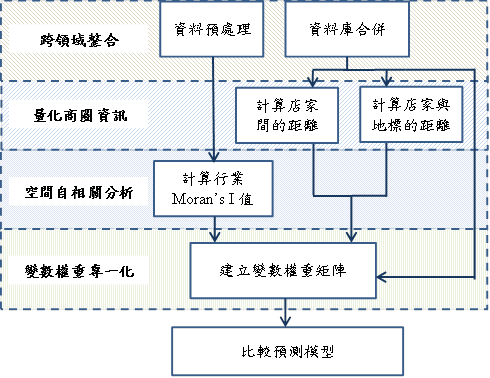

本研究從政府的開放資料中擷取資料，並將資料進行預處理，以便後續的計算與轉換。為了在查看店家的資料時能夠同時看到不同面向的資料，本研究將不同領域的資料庫與店家的資料庫加以整合。
為了量化每個店家在地理上的商圈性質，本研究接著計算店家與店家之間的距離以及店家與新莊區地標的距離，並轉換為遠近程度的變數並增加到本研究的資料庫中。
本研究考量到每個行業的分布情況會對開店造成一定程度的影響，在資料預處理後便能直接計算每個行業的Moran’s I值作為行業分布情況的指標，並轉換為衡量每個行業「與同業遠近程度」變數重要性的權重。
為了找出每個行業的關鍵因素，本研究在建立預測模型前，利用變數篩選演算法對每個變數計算重要程度並轉為權重值，再加上前一個步驟計算「與同業遠近程度」變數的權重值，建立每個行業的變數權重矩陣。
